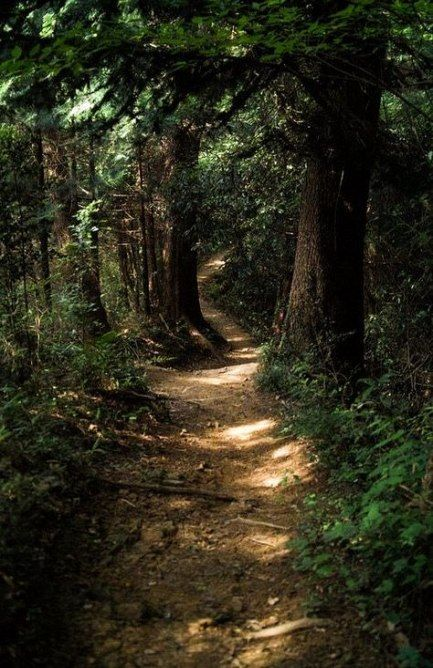

Puede que ya no hayamos visto antes
Yo soy tu guia

...
En este momento te encuentras a
punto de despertar, pero por
alguna razón estás teniendo
problemas para despertar
Puede que haya dentro de tu consciencia
...
podrían ser hadas
De todas formas estoy aquí
para ayudarte a salir de
este lugar sano y salvo.
Solo puedo interpretar que pasa en tu
sueño, es tu trabajo hacer las desiciones
¿A donde deberiamos ir?
Playa
Una playa en medio
de un atardecer

Playa
Bosque
Bosque claro
con un camino
de tierra

Bosque
Granja
Una granja
con un campo
de trigo

Granja
Playa
Una playa en medio
de un atardecer
Bosque
Bosque claro
con un camino
de tierra
Granja
Una granja
con un campo
de trigo